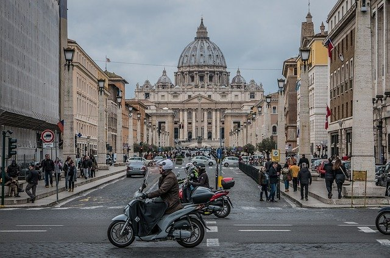
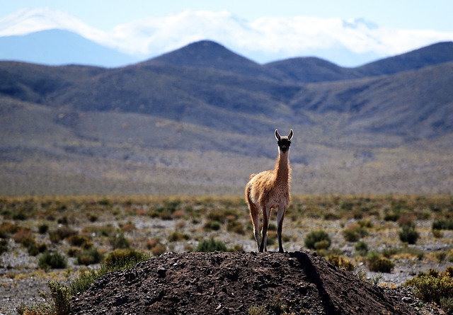

Pais que devo viajar
Estados Unidos

Os EUA são um país com 50 estados que cobrem uma vasta faixa da América do Norte, com o Alasca ao noroeste e o Havaí no Oceano Pacífico, estendendo a presença do país. As principais cidades da costa atlântica são Nova York, um centro financeiro e cultural global, e a capital, Washington, DC. Chicago, uma metrópole do centro-oeste, é conhecida por sua importante arquitetura, enquanto Los Angeles, na costa oeste, é famosa pelas produções cinematográficas de Hollywood
Paris

Paris, a capital da França, é uma importante cidade europeia e um centro mundial de arte, moda, gastronomia e cultura. Sua paisagem urbana do século XIX é cortada por avenidas largas e pelo rio Sena. A cidade é conhecida por monumentos como a Torre Eiffel e a Catedral de Notre-Dame, uma construção gótica do século XII, sendo famosa também pela cultura dos cafés e por lojas de estilistas famosos na Rue du Faubourg Saint-Honoré
Canada

O Canadá é um país norte-americano que se estende desde os EUA, no sul, até o Círculo Polar Ártico, no norte. Entre suas grandes cidades estão a gigantesca Toronto; Vancouver, centro cinematográfico da costa oeste; Montreal e Québec City, que falam francês; e a capital, Ottawa. As vastas regiões de natureza selvagem do Canadá compreendem o Parque Nacional de Banff, repleto de lagos nas Montanhas Rochosas. Abriga também as Cataratas do Niágara, um famoso conjunto de enormes cachoeiras.
Roma
Roma, a capital da Itália, é uma cidade cosmopolita, enorme, com quase 3.000 anos de arte, arquitetura e cultura influentes no mundo todo e à mostra. Ruínas antigas como o Fórum e o Coliseu evocam o poder do antigo Império Romano. A Cidade do Vaticano, sede da Igreja Católica Romana, tem a Basílica de São Pedro e os museus do Vaticano, que abrigam obras-primas como os afrescos da Capela Sistina de Michelângelo.
Chile
O Chile é um país de território comprido e estreito que se estende pelo extremo oeste da América do Sul, com mais de 6.000 km de litoral ao longo do Oceano Pacífico. Santiago, sua capital, fica localizada em um vale cercado pelos Andes e pelas montanhas da Cordilheira da Costa do Pacífico Sul. Nessa cidade, a Plaza de Armas, repleta de palmeiras, abriga a catedral neoclássica e o Museu de História Nacional. O imenso Parque Metropolitano tem piscinas, um jardim botânico e um zoológico.
Documentos
- Passaporte
- Habilitação
- Registro Geral
- CPF
Pessoas que irão
- Filhas
- Esposa
- Mãe
- Irmão